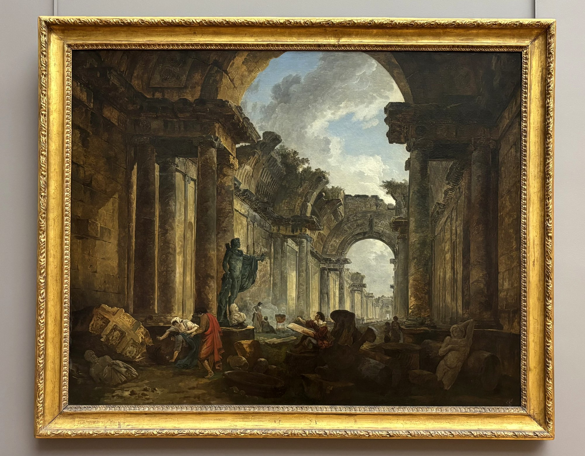
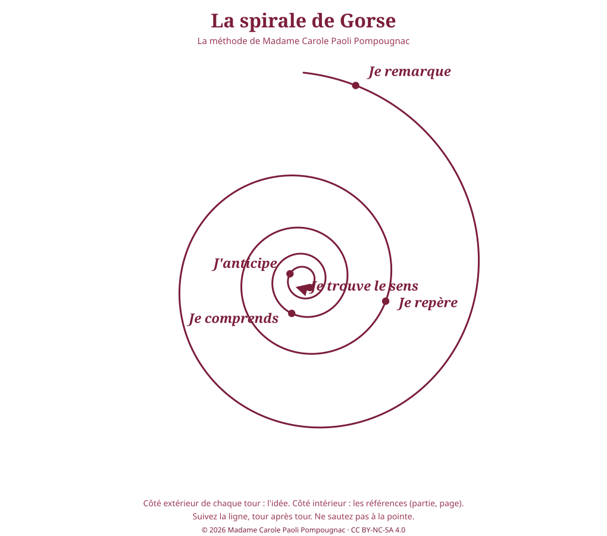

Lettres · Première technologique · lycée général et technologique
Quand la machine s'arrête
Fin d'un monde, retour à la terre : salut ou nouvelle servitude ?
René Barjavel, Ravage (1943). Objet d'étude : Le roman et le récit du Moyen Âge au XXIe siècle. Parcours proposé par le professeur (ce n'est pas un parcours national) : « Fins du monde et recommencements : le roman face au progrès ». Lecture cursive, pour la seconde partie de l'oral et pour l'entraînement au commentaire.

Pourquoi cette séquence ?
Ravage est souvent lu comme un roman d'aventure catastrophe : l'électricité disparaît, Paris brûle, un jeune homme conduit des survivants vers sa Provence natale. Le roman est plus troublant. Il fait la satire d'une civilisation qui a tout confié à la machine, puis il célèbre un chef qui interdit la machine, impose la polygamie et règne en patriarche. Publié en 1943, d'abord en feuilleton dans un hebdomadaire collaborationniste, il entre en résonance avec l'idéologie du « retour à la terre » de la Révolution nationale. Les élèves liront le roman avec plaisir, puis apprendront à interroger ce qu'il célèbre. L'enjeu est double : maîtriser les exercices de l'épreuve et devenir des lecteurs qui distinguent une vision du monde d'une vérité.
Fiche d'identité
| Titre | Quand la machine s'arrête |
| Sous-titre | Fin d'un monde, retour à la terre : salut ou nouvelle servitude ? |
| Œuvre | René Barjavel (1911-1985), Ravage, Denoël, 1943 |
| Classe | Première technologique · lycée général et technologique |
| Objet d'étude | Le roman et le récit du Moyen Âge au XXIe siècle |
| Statut de l'œuvre | Lecture cursive, proposée au titre des lectures cursives de l'objet d'étude roman. Un élève peut la choisir pour la seconde partie de l'oral. Ce n'est pas une œuvre du programme national. |
| Parcours proposé par le professeur | « Fins du monde et recommencements : le roman face au progrès » |
| Durée | 8 séances de 55 minutes (minutage sur 52 minutes) |
| Exercices préparés | lecture à voix haute, explication linéaire, question de grammaire, présentation de l'œuvre choisie et entretien, commentaire |
| Méthode | La spirale de Gorse (le nom rend hommage à la grand-mère du mari de Madame Carole Paoli Pompougnac), en cinq étapes, toujours dans cet ordre : Je remarque, Je repère, Je comprends, J'anticipe, Je trouve le sens. Le schéma, en bordeaux, est ci-dessous et dans les téléchargements. |
| Prolongement | Séquence croisée avec la séquence d'anglais Who Speaks for the Desert?, sur Dune de Frank Herbert (1965). Cette séquence s'inscrit aussi dans le fil des fictions d'avertissement, aux côtés de la séquence de Terminale sur Orwell. |
Cadre officiel
Ravage ne figure pas sur le programme national d'œuvres de Première, voie technologique, pour 2026-2027. Pour l'objet d'étude roman, ce programme retient Chrétien de Troyes, Le Chevalier de la charrette (parcours « héroïsme et amour ») ; Zola, Thérèse Raquin (parcours « anatomie des passions ») ; Simone Schwarz-Bart, Pluie et vent sur Télumée Miracle (parcours « tisser les mémoires, habiter le monde »), selon le BO n° 30 du 24 juillet 2025 (note de service du 4 juillet 2025, NOR MENE2518792N).
Il ne peut donc pas être l'œuvre de l'objet d'étude, ni fournir les textes de la première partie de l'oral, qui portent sur les œuvres au programme et leur parcours. Il trouve en revanche une place précise :
- comme lecture cursive. Selon la note de service du 11 septembre 2026 (NOR MENE2622658N, publiée au BO spécial n° 4 du 17 septembre 2026), la seconde partie de l'oral porte sur l'œuvre choisie par le candidat parmi celles qui ont été étudiées en classe ou proposées par l'enseignant au titre des lectures cursives obligatoires. Un élève pourra donc présenter Ravage à l'oral ;
- comme terrain d'entraînement au commentaire, puisque le texte proposé pour le commentaire, à l'écrit, n'est pas extrait d'une des œuvres au programme ;
- comme entraînement à l'explication linéaire et à la question de grammaire, dans le format exact de l'épreuve.
Les trois explications linéaires de cette séquence sont donc des entraînements. Elles ne figurent pas au récapitulatif des textes de l'oral, sauf si le professeur construit son propre parcours autour d'une œuvre du programme : la séquence se place bien à côté de Pluie et vent sur Télumée Miracle, dont le parcours dialogue avec la terre, la communauté et la survie.
Rappel des épreuves anticipées de français, voie technologique
Selon la même note de service, en vigueur à compter de l'année scolaire 2026-2027 (session 2028) :
- Écrit, 4 heures, coefficient 5 : au choix, un commentaire guidé sur un texte littéraire lié à un objet d'étude autre que la littérature d'idées, noté sur 20 ; ou une contraction d'un texte d'environ 750 mots (contraction au quart, marge de plus ou moins 10 %) notée sur 10, suivie d'un essai noté sur 10.
- Oral, 30 minutes de préparation, 20 minutes, coefficient 5. Première partie (12 minutes) : lecture à voix haute après avoir situé le texte (2 points), explication linéaire d'un passage d'une vingtaine de lignes (8 points), question de grammaire portant sur l'analyse syntaxique d'une courte phrase ou d'une partie de phrase (2 points). Seconde partie (8 minutes, 8 points) : présentation de l'œuvre choisie et des raisons du choix, puis entretien.
La contraction et l'essai relèvent de l'objet d'étude littérature d'idées : cette séquence ne les évalue pas, mais la séance 6 propose un entraînement à la reformulation, utile pour la contraction.
Le programme lui-même est celui de l'enseignement commun de français, arrêté du 17 janvier 2019, BO spécial n° 1 du 22 janvier 2019, modifié en 2020.
Les finalités du programme, et les cinq pôles de travail
Le programme n'énonce pas « cinq directives ». Il énonce six finalités propres de l'enseignement du français au lycée (programme de Première, publié sur Éduscol) : améliorer les capacités d'expression et de compréhension, par un enseignement continué de la langue et par la pratique fréquente de la lecture, de l'écriture et de l'oral ; faire lire les élèves et leur permettre de comprendre et d'apprécier les œuvres, afin de construire une culture littéraire commune, ouverte sur les autres arts, les savoirs et la société ; structurer cette culture en faisant droit à la sensibilité et à la créativité, et en faisant toute sa place à la dimension historique ; former le sens esthétique et cultiver le goût, en renforçant les capacités d'analyse et d'interprétation ; approfondir le jugement et l'esprit critique, à l'écrit comme à l'oral ; amener les élèves à une attitude autonome et responsable, notamment en matière de recherche d'information. Le préambule précise que les principaux objectifs sont de faire réfléchir, lire, écrire et parler les élèves.
Pour la lisibilité des séances, cette séquence regroupe ce travail en cinq pôles. Ce groupement est pédagogique : ce n'est pas le libellé officiel.
| Pôle | Finalités officielles correspondantes |
|---|---|
| LIRE (lire et interpréter) | 2 et 4 |
| ÉCRIRE | 1 et 5 |
| ORAL (s'exprimer à l'oral) | 1 et 5 |
| LANGUE (étudier la langue) | 1 |
| CULTURE (construire une culture littéraire et artistique) | 2, 3 et 6 |
Fil conducteur
Un seul fil : la dépendance. Dépendance à la machine, dans les parties I et II (« Les temps nouveaux », « La chute des villes ») ; dépendance au chef, dans les parties III et IV (« Le chemin de cendres », « Le patriarche »). Les élèves suivent ce fil d'une partie à l'autre, et se demandent si l'on change de maître plutôt que de condition.
Les huit séances
Chaque séance dure 55 minutes, minutée sur 52. Elle a un point d'arrêt, une sortie de secours de 8 minutes, une trace écrite, une prise de parole de chaque élève, et un travail pour la séance suivante.
| Séance | Titre | Étape de la spirale | Pôle principal | Support | Exercice de l'épreuve |
|---|---|---|---|---|---|
| Séance 1 | Entrer dans 2052 | Je remarque | CULTURE, ORAL | C1, C2, C3, contexte de 1943 | situer une œuvre à l'oral |
| Séance 2 | La civilisation du confort | Je remarque, Je repère | LIRE, LANGUE | Explication linéaire 1 (C4) | explication linéaire, grammaire |
| Séance 3 | Une nature dévalorisée | Je repère | LIRE, ÉCRIRE | C5, Rousseau | paragraphe de commentaire |
| Séance 4 | La chute des villes | Je comprends | LIRE, LANGUE, CULTURE | Explication linéaire 2 (C6), histoire des arts | explication linéaire, grammaire |
| Séance 5 | Le chef et le groupe | J'anticipe | ÉCRIRE | C7, évaluation écrite : commentaire guidé | commentaire (évaluation sur 20) |
| Séance 6 | Le chemin de cendres, la terre retrouvée | J'anticipe | CULTURE, ÉCRIRE | Valéry, Giono, Millet ; reformulation | reformulation (compétence de la contraction) |
| Séance 7 | Le patriarche | Je trouve le sens | LIRE, LANGUE, ORAL | Explication linéaire 3 (C8, C9), débat | explication linéaire, grammaire, débat |
| Séance 8 | L'oral de l'épreuve | la pointe | ORAL | Oral blanc, œuvre choisie | oral de l'épreuve (évaluation sur 20) |
La spirale de Gorse
La spirale de Gorse est la méthode de Madame Carole Paoli Pompougnac ; son nom rend hommage à la grand-mère de son mari. C'est une vraie spirale ronde, aérée, dessinée en bordeaux. Elle part de l'extérieur et tourne vers l'intérieur, jusqu'à une pointe, jamais jusqu'à un centre. Sur le côté extérieur de chaque tour, les élèves écrivent l'idée. Sur le côté intérieur, les références (partie, page). Ils suivent la ligne, tour après tour ; personne ne saute à la pointe.

Les cinq tours, pour tout le roman
| Étape | Question ou tâche | Séances |
|---|---|---|
| Je remarque | Qu'est-ce qui frappe d'abord dans le Paris de 2052 ? | 1 et 2 |
| Je repère | Relève les objets, les matières, les machines ; puis les verbes de destruction. | 2 et 3 |
| Je comprends | Pourquoi la chute est-elle si rapide ? Que révèle-t-elle de la civilisation ? | 3 et 4 |
| J'anticipe | Que risque une communauté qui se donne un chef tout-puissant pour survivre ? | 5 et 6 |
| Je trouve le sens | Le roman propose-t-il une liberté ou une autre dépendance ? | 7 et 8 |
Spirale remplie (exemple sur le roman entier)
Cet exemple n'est pas donné aux élèves d'avance. Il figure ici, et dans le guide du professeur, pour conduire le travail.
| Étape | Idée (côté extérieur) | Référence (côté intérieur) |
|---|---|---|
| Je remarque | Un monde confortable et artificiel, qui remplace la nature. | Partie I : « Cette matière remplaçait presque partout le verre, le bois, l'acier et le ciment. » |
| Je repère | La nature est dévalorisée par un narrateur ironique : « la marâtre Nature », « L'élevage, cette horreur ». | Partie I |
| Je comprends | Sans électricité, la ville devient un brasier : la civilisation n'était qu'un décor. | Partie II : « une odeur de monde qui naît ou qui meurt, une odeur d'étoile » |
| J'anticipe | Le chef qui sauve exige l'obéissance ; la survie justifie l'autorité. | Partie III, discours de François : « Je ne vous demande pas d'oublier nos morts » |
| Je trouve le sens | Le salut par la terre devient un ordre patriarcal : on a changé de maître. | Partie IV : « Il ordonna à tous les hommes, veufs ou célibataires, de choisir une femme » |
La pointe attendue, que les élèves formulent eux-mêmes en séance 7 et défendent en séance 8 : peut-on se libérer d'une dépendance sans se soumettre à une autre ?
Les évaluations
- Séance 1, diagnostic, non noté. Chaque élève situe l'œuvre en trois phrases (auteur, date, contexte), comme au début de l'oral.
- Séance 5, évaluation de mi-parcours, sur 20. Commentaire guidé sur le discours de François (environ vingt-cinq lignes, dans l'édition de la classe). Sujet : « Vous ferez le commentaire de ce texte. Vous pourrez montrer d'abord comment François s'impose comme chef par la parole, puis vous vous demanderez ce que cette autorité laisse prévoir pour la suite du récit. » En classe, 48 minutes pour l'introduction et le premier axe ; le second axe et la conclusion se rédigent à la maison, ou en séance supplémentaire. Barème : introduction 3, axe 1 5, axe 2 5, citations 3, conclusion 1, langue 3. La grille et le corrigé (éléments attendus) sont sur la page de la séance 5 et dans les téléchargements.
- Séance 8, tâche finale, sur 20. Oral blanc au format de l'épreuve. Première partie : lecture (2), explication linéaire (8), grammaire (2). Seconde partie : présentation de Ravage comme œuvre choisie, puis entretien (8). Les élèves non interrogés tiennent le rôle de l'examinateur, avec la grille. La séance accueille un passage complet et plusieurs présentations ; les autres passages ont lieu ensuite. Grille et attendus de l'entretien : séance 8.
Groupement de textes
- Jean-Jacques Rousseau, Discours sur les sciences et les arts (1750), domaine public. Extrait de la première partie, au choix du professeur. Question : le progrès des savoirs améliore-t-il les mœurs ? Phrase souvent retenue : « Nos âmes se sont corrompues à mesure que nos sciences et nos arts se sont avancés à la perfection. »
- Paul Valéry, « La Crise de l'esprit », première lettre (1919), domaine public en France. Phrase d'ouverture : « Nous autres, civilisations, nous savons maintenant que nous sommes mortelles. » On lit le premier paragraphe.
- Jean Giono, Les Vraies Richesses (1936), œuvre protégée : citation courte uniquement, choisie par le professeur dans la préface de son édition. Question : la terre comme refus de la ville industrielle, avant 1940.
Lecture cursive complémentaire, facultative : Jules Verne, Paris au XXe siècle (écrit en 1863, publié en 1994), pour comparer deux Paris futurs.
Histoire des arts
Les illustrations de la séquence sont des peintures du domaine public, choisies pour le monde de Barjavel : la ville-machine, l'incendie, la ruine, la terre retrouvée, l'autorité d'un chef. Aucune image n'est reprise d'une autre page du site, ni réemployée d'une séance à l'autre, ni reprise de la couverture. La couverture, un musée imaginé en ruines par Hubert Robert en 1796, n'apparaît pas dans les séances. En séance 4, on travaille John Martin et Thomas Cole. En séance 6, Millet, et la récupération politique d'une image paysanne.
Mention sans reproduction : Le Corbusier, cité dans l'épigraphe, et ses projets de ville (œuvre protégée) ; Fritz Lang, Metropolis (1927), film protégé en France, citable en contexte seulement.
Pont vers Dune
Cinq points de contact, à reprendre dans la séquence croisée, et déjà enseignables ici. La séquence d'anglais est en ligne : Who Speaks for the Desert?.
- Une terre qui façonne ses habitants : le désert d'Arrakis fait les Fremen ; la terre retrouvée et la terre dévastée font la communauté de François.
- La ressource vitale et la dépendance d'une civilisation technique : l'empire de Dune ne voyage pas sans l'épice ; le Paris de 2052 ne vit pas sans électricité.
- La figure du chef : Paul Atréides, messie fabriqué, et François, patriarche. Dans les deux cas, le chef qui sauve devient celui qui commande, et les deux romans laissent entendre le prix de ce salut.
- Technique et pouvoir : Paul contrôle l'épice parce qu'il peut la détruire ; François interdit la machine et en tue presque l'inventeur. Qui décide de la technique ?
- Le retour à la terre ou la transformation de la terre : François revient à l'agriculture ancienne ; les Fremen veulent faire du désert un monde vert. Retour ou projet ?
Vocabulaire à installer
La civilisation technique. Le progrès, la technique, la mécanisation, l'automatisation, la dépendance, l'énergie, une mégalopole, l'artifice, artificiel.
La catastrophe. L'apocalypse, le cataclysme, l'effondrement, la panne, l'exode, le chaos, la barbarie, la survie, un survivant, un rescapé.
La terre. La ruralité, un paysan, la paysannerie, le retour à la terre, l'autarcie, la communauté, la pastorale, une image d'Épinal.
Le pouvoir. Un chef, l'autorité, le patriarche, le patriarcat, l'obéissance, la tyrannie, le paternalisme, un sauveur, la loi.
L'analyse. Le narrateur omniscient, le point de vue, l'ironie, l'antiphrase, l'énumération, l'anaphore, le paradoxe, l'antithèse, la métonymie, le registre épique, le récit d'anticipation, la dystopie, l'uchronie (à distinguer).
Six citations à retenir
- « À la mémoire de mes grands-pères, paysans » (dédicace).
- « Cette matière remplaçait presque partout le verre, le bois, l'acier et le ciment. » (partie I).
- « L'élevage, cette horreur, avait également disparu. » (partie I).
- « une odeur de monde qui naît ou qui meurt, une odeur d'étoile » (partie II).
- « Je ne vous demande pas d'oublier nos morts, mais de penser d'abord à vous et à vos camarades vivants. » (partie III).
- « Il fallait des bras pour remuer toute la terre abandonnée. » (partie IV).
Le roman est protégé (Barjavel est mort en 1985). Seules des citations courtes figurent sur ces pages, à des fins d'analyse et d'enseignement. Le professeur distribue les extraits à partir de l'édition de la classe (Folio, ISBN 2070362388 ; la pagination varie selon les tirages).
Bilan
Ravage fait la satire d'une civilisation qui a tout remis à la machine : quand l'électricité disparaît, la ville devient un brasier et les hommes retournent à la violence. François conduit les survivants vers la terre et fonde une société agricole. Mais ce salut a un prix : la loi d'un seul, l'obéissance, un ordre patriarcal. Lu en 1943, dans le contexte du « retour à la terre », le roman pose une question qui dépasse son époque : peut-on se libérer d'une dépendance sans se soumettre à une autre ?
Fiche de lecture
La séquence sera associée à la fiche de lecture de Madame Carole Paoli Pompougnac, dans sa dernière version, proposée en pdf, docx et odt. Cette fiche est en attente du modèle. Elle figurera alors dans les téléchargements et sur cette page.
Téléchargements
Chaque document est proposé en pdf, docx et odt, depuis la page des téléchargements : la séquence complète, le guide du professeur, le livret élève, la version dys, le corrigé, et une spirale vierge. La fiche de lecture les rejoindra, dans les trois mêmes formats, dès que le modèle aura été reçu.
Bibliographie et crédits
Les textes officiels, l'édition de référence, et les crédits de chaque illustration sont réunis sur la page des sources. Le guide du professeur indique les citations à vérifier dans l'édition de la classe, et le contexte de publication de 1943 (feuilleton, Denoël, « retour à la terre »), à présenter avec exactitude, sans réquisitoire ni effacement.
Madame Carole Paoli Pompougnac